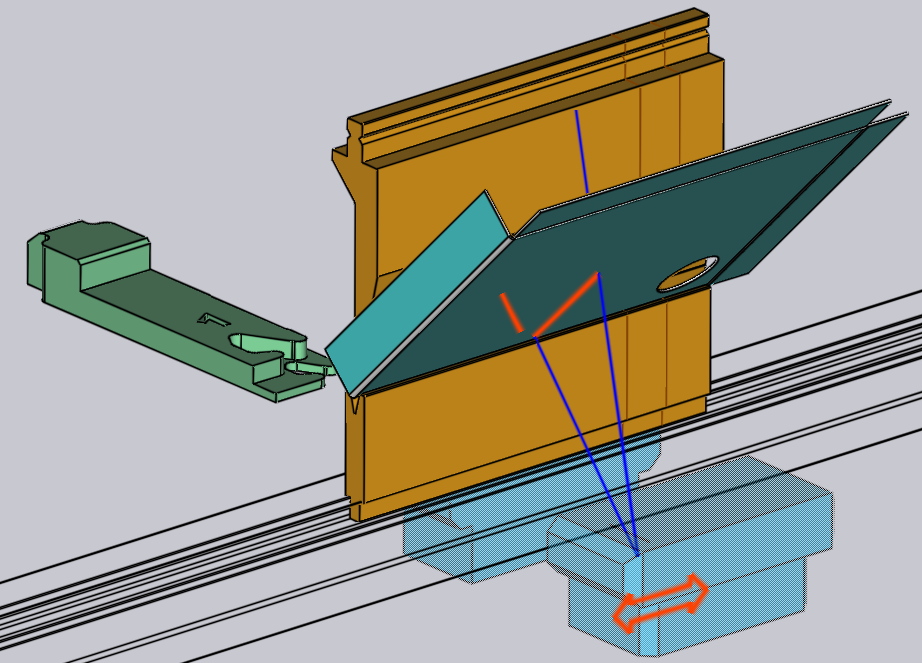

角度測定の編集
プレスブレーキがACBやLCBなどの角度測定システムを搭載している場合、TecZone Bendはこれらを使用して曲げ角度の精度を向上します。このプロセスの詳細については、角度測定ページを参照してください。
このページでは、レーザ 式角度測定使用の際の編集操作を説明します。_センサー ディスク_式測定システムを使用する場合、センサー ディスク セグメントのあるパンチ 取り付けをクリックして、これらの設定を編集します。
レーザACBの編集
ACB パネルを開くと、次のいずれかの方法で ACB 設定を編集できます。
-
ナビゲータの曲げ番号を 2 回クリックして曲げパネルを開き、Angle Measureボタンをクリックします (これは、マシンに角度測定システムが設定済みな場合に限り表示されます)。
-
ナビゲーターのACB行のセルのいずれかをクリックします。
-
ACB センサーが表示されている場合は、その 1 つをクリックします (下の画像を参照)。シミュレーション中、角度測定システム ACBが測定位置に到達し、パーツを撮影すると表示されます。カメラで撮影された実際のレーザラインは、パーツ上に投影されます（オレンジ色で）。これらのラインは、センサー位置をインタラクティブに編集する際に、リアルタイムで表示/更新されます。インタラクティブ編集中にマウスを前方または後方のセンサーの上に移動すると、次のような注釈が表示されます：

材料上のオレンジ色のトレースは、実際に使用可能なトレース長を示します。センサーをクリックしてドラッグすると、ラインは即座に更新されます（開口部やフォーミング、ダイやゲージの影を反映した上で）。青い線はレーザスウィープの上限と下限を示しています（マウスが前面または背面のセンサーの上にある間のみ表示されます）。
ACBパネル

横の画像は、ACBパネルからの典型的な表示です。
-
Systemセレクターは、レーザ測定システムとディスク測定システムを切り替えるためのもので、マシンに両システムが搭載されている場合に限り表示されます。
-
Modeは、前述のACB方式に関するセクションで説明されている識別モードの一つです。
-
Lasersリストでは、測定に両レーザを使用するかを選択できます（初期設定）。場合によっては、フロントまたは背面レーザのみを使用できます。このリストの両方（非対称）オプションを使うと、両方のレーザを使用しても、フロントと背面のレーザを別々に位置決め出来ます（下の画像を参照）。
-
Position 入力はレーザ測定のZ位置を設定します（マシン座標）。これを変更すると、リアルタイムで、ACB センサーが移動し、レーザ トレースが再計算され、トレースの長さに関する警告やエラーがナビゲーターに表示/非表示されます。
-
Trace ディスプレイには、測定に使用できるレーザトレースが表示されます。通常、フロントトレースと背面トレースの長さは異なります；これは最小値の表示です。
-
このMove to measure設定は、ACB レーザー センサーが測定位置に移動する_タイミング_を制御します。通常、_ステップ変更_フェーズ（前の曲げ加工からこの曲げ加工への切り替えの時）で位置に移動しますが、場合によっては、これではパーツ挿入が困難になることがあります。このような場合、曲げ加工開始時にパンチが_ミュートポイント_に到達してから、センサーを位置決めすることができます。
-
After measure 設定で、ACB Laser センサーが測定完了後、どこに移動するかを制御します。これ以上センサーを使用しない場合、通常は_パーキングポジション_に戻ります。後続の曲げ加工に必要な場合は、現在位置に_留まります_。
ACB品質設定
-
Warning とError設定は閾値です。測定した角度逸脱がこれらの値を超える場合、コントローラーは、オペレーター向けに警告やエラーを表示します。
-
このACB Speed 方式は、いくつものパーツの継続生産を加速します。 最初のパーツで一度スプリングバックを測定し、後続のパーツ全てに同じ値を適用するからです。ACB 速度は、曲げ加工ごとに個別に有効化/無効化できます。

上のパネルには1回の測定しか表示しません（曲げ線の長さが短く、複数回の測定ができなかったためです）。曲げ線が長い場合、TecZone Bendは、もっと測定を使用します。その後、横のようなディスプレイが表示されることがあります。
-
この例では、Lasers設定が両方（非対称）なので、Position入力が分割され、FrontとRearは別々に表示されます。
-
Measures 入力には測定回数が表示されます；これは、TecZone Bend（曲げ成形長さに基づいて） 算出した最適値に設定されています。 この例では、 TecZone Bendで測定は3回となっていますが、これを最低1回に減らすことも可能です。
-
Index スライダーを使用して、３つの測定のいずれかを選択します。このスライダーを動かすと、対応する位置がフロントと背面の入力欄に表示され、編集できます。シミュレーションでも、センサーが相当する測定位置に移動します。